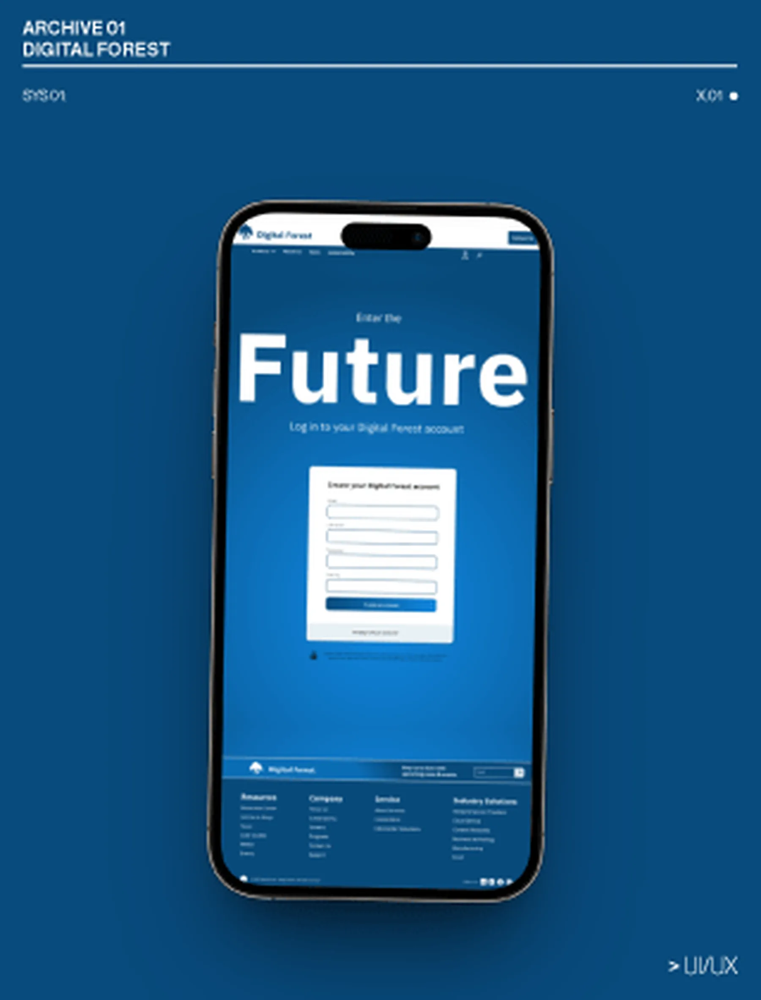
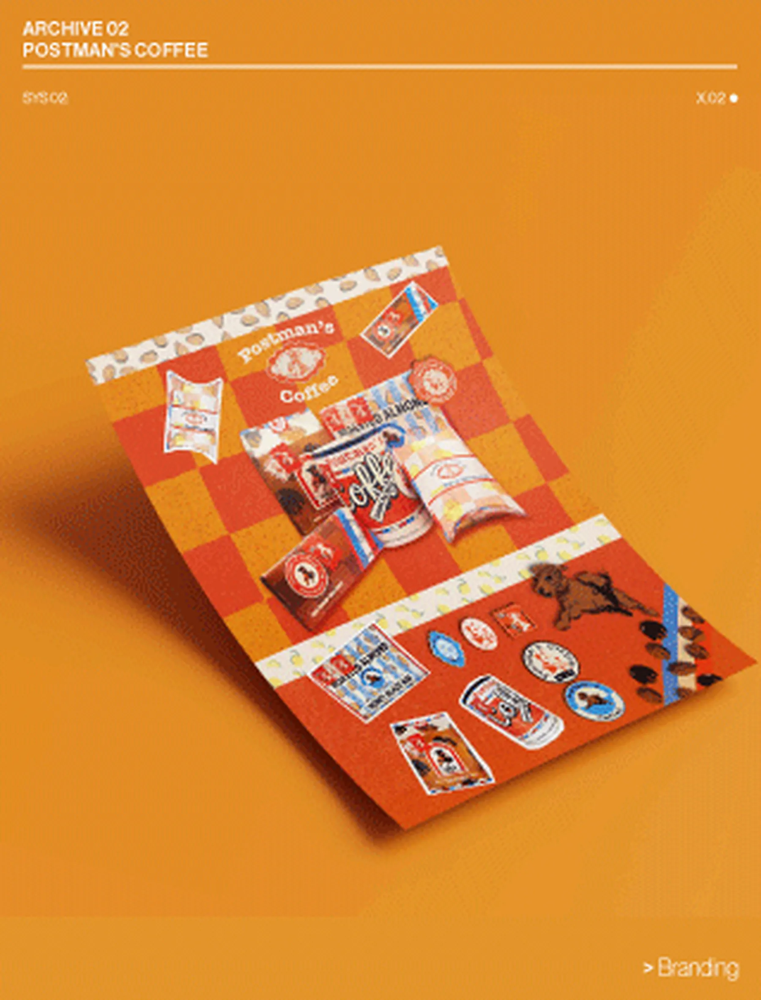
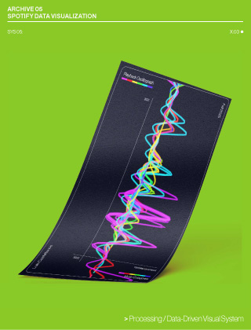
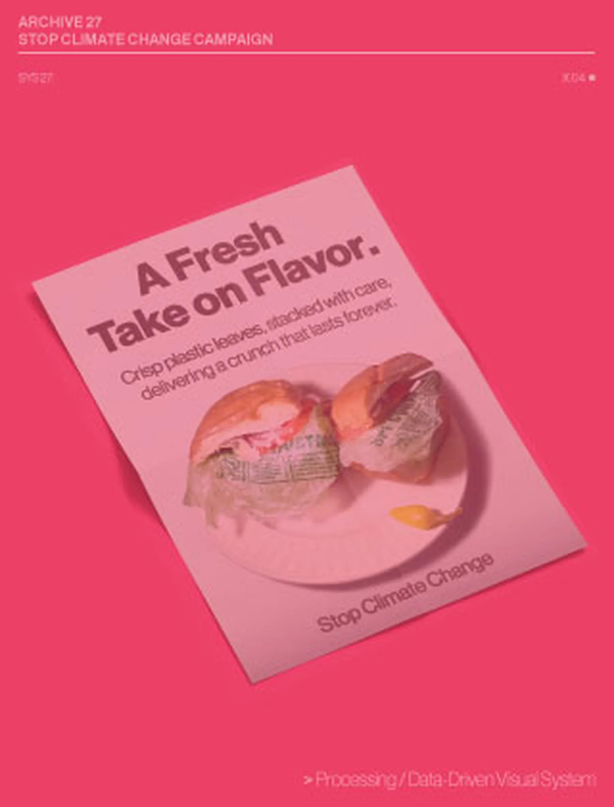
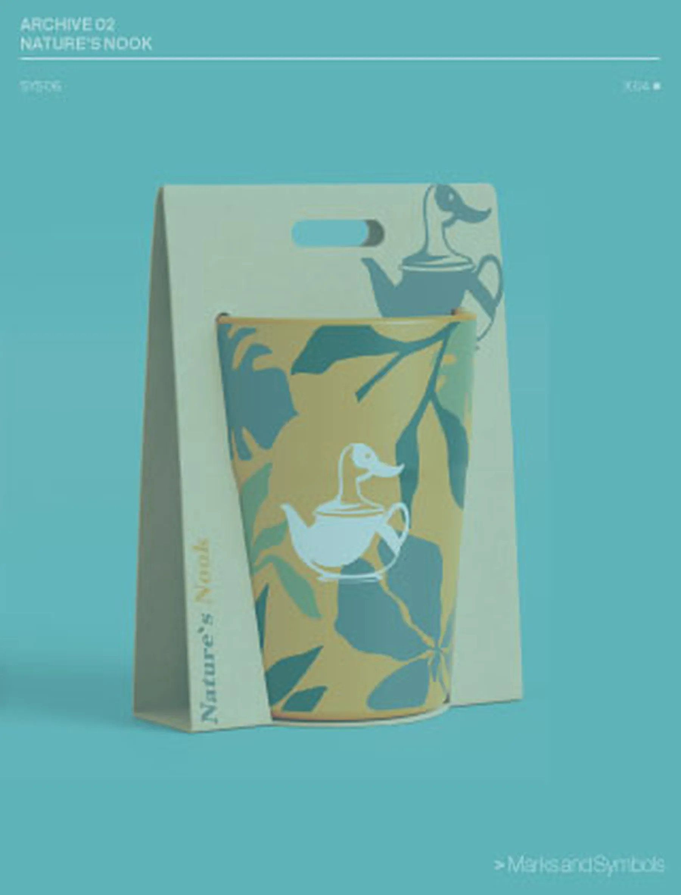

L.Design
Graphic Designer creating
Brand Systems
Digital Experiences,Generative Design, Visual Archives.
Balancing, clarity, accessibility, and experimentation.

SYS-01
DIGITAL FOREST
UI / UX Design System
ACTIVE ●
SYS-02
POSTMAN'S COFFEE
Brand Identity System
ACTIVE ●
SYS-21
SPOTIFY DATA VISUALIZATION
Generative / Data System
ACTIVE ●
